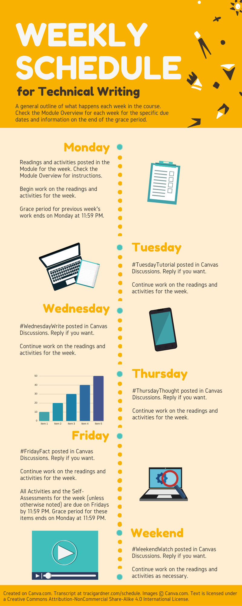

This is a general outline of what happens each week in the course. Check the Module Overview for each week for the specific due dates and information on the end of the grace period.
| Day of the Week | What Happens |
|---|---|
| Monday | Readings and activities posted in the Module for the week. Check the Module Overview in Canvas for instructions. Begin work on the readings and activities for the week. Track what you do in your work log. Grace period for previous week’s work ends on Monday at 11:59 PM. |
| Tuesday | Get started on the work for the week. Try to complete any preliminary activities in Canvas on Tuesday. Fill out your work log. Continue work on the readings and activities for the week. |
| Wednesday | To stay on track, begin your rough draft or use feedback to revise your draft on Wednesday. Add details on your work to your work log. Continue work on other readings and activities for the week. |
| Thursday | Post a passage from your project (the rough draft or revision) with questions for Feedback Discussions in Piazza by 11:59 PM. Make sure your work log is up-to-date. Continue work on the readings and activities for the week. |
| Friday | Respond to Feedback Discussions in Piazza by others in the class. Fill out your work log and add your weekly summary and reflection. All Activities and the Self-Assessment for the week are due on Fridays by 11:59 PM. Grace period for these items ends on Monday at 11:59 PM. |
| Weekend | Continue work on the readings and activities as necessary, or get started on the work for the next week. |
Credit: Created on Canva.com. Text is licensed under a Creative Commons Attribution-NonCommercial Share-Alike 4.0 International License.